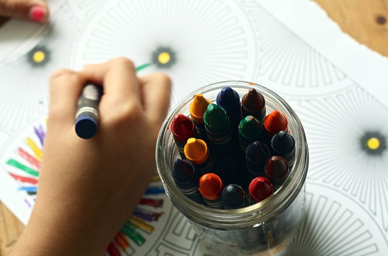

Quienes Somos
Somos una Institución Privada que se dedica a la Edución de niños y niñas. Para esto contamos con un equipo de profesionales altamente capacitado y reconicidos en cada una de sus disciplinas docentes

¿Por qué elegirnos?
Porque tenemos en cuenta sus competencias y sus capacidades, en cada una de las etapas. En nuestro Instituto se hace un seguimiento exhaustivo y personalizado de los alumnos atendiendo a sus necesidades individuales.
Propuesta Educativa

ARTE Y PINTURA
Dibujo y pintura en un lugar ameno, con libertad para crear pero con pautas para desarrollar los conocimientos y habilidades personales. Desarrollo de la creatividad a través de la experimentación.
EDUCACIÓN EN VALORES
Al ponernos en el lugar de otras personas a nivel cognitivo y emocional, mejoramos la capacidad para resolver conflictos y entender las opiniones de los demás.
EDUCACION FÍSICA
En la escuela primaria, la educación física constituye una forma de intervención pedagógica que se extiende como práctica social y humanista, que estimula las experiencias de los alumnos.

PENSAMIENTO CRITICO
Esta forma de razonar nos vuelve más analíticos y observadores, nos enseña a reconocer la información de calidad y nos ayuda a resolver mejor los problemas.